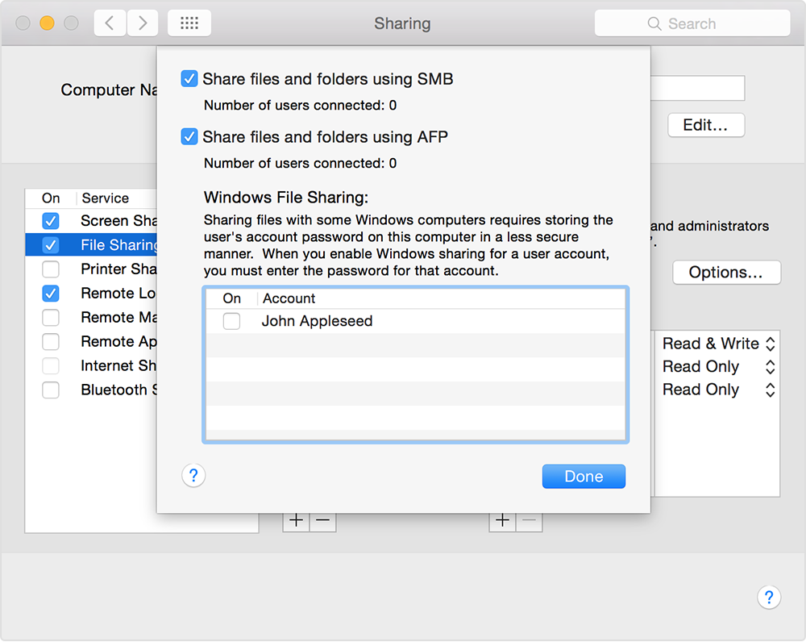

Samba
Sun 26 June 2016
Apple is finally beginning to move away from AFP and really embrace SMB with macOS Sierra. To setup samba on linux:
sudo apt-get update sudo apt-get install samba samba-common-bin sudo cp /etc/samba/smb.conf /etc/samba/smb.bak sudo pico /etc/samba/smb.conf
Home Files (pi)
Now change the following lines to:
wins support = yes
...
[homes]
browseable = yes
read only = no
Now execute:
sudo smbpasswd -a pi sudo service smbd restart sudo service nmbd restart
You should now have access to your home files when you login as pi. A condensed version is below:
#======================= Global Settings ======================= [global] workgroup = WORKGROUP wins support = yes dns proxy = no #### Debugging/Accounting #### log file = /var/log/samba/log.%m max log size = 1000 syslog = 0 panic action = /usr/share/samba/panic-action %d ####### Authentication ####### server role = standalone server passdb backend = tdbsam obey pam restrictions = yes unix password sync = yes passwd program = /usr/bin/passwd %u passwd chat = *Enter\snew\s*\spassword:* %n\n *Retype\snew\s*\spassword:* %n\n *password\supdated\ssuccessfully* . pam password change = yes map to guest = bad user ############ Misc ############ # Allow users who've been granted usershare privileges to create # public shares, not just authenticated ones usershare allow guests = yes #======================= Share Definitions ======================= [homes] comment = Home Directories browseable = yes read only = no create mask = 0700 directory mask = 0700 valid users = %S [Mnt] comment = My shared stuff path = /mnt create mask = 0700 directory mask = 0700 read only = no browseable = yes public = yes force user = pi #force user = root only guest = no
macOS
Also make sure SMB sharing is turned on (should be):
System Preferences -> Sharing -> File Sharing On
You should see something like (look for the smb entry):
Other users can access shared folders on this computer, and administrators all volumes, at “afp://xx.xx.xx.xx” or “smb://xx.xx.xx.xx”.
If not, go into options and turn on SMB. Also I had to check the box next to my username.
Infuse
I can also use this app to play movies on SMB shares. You can get it in the app store.